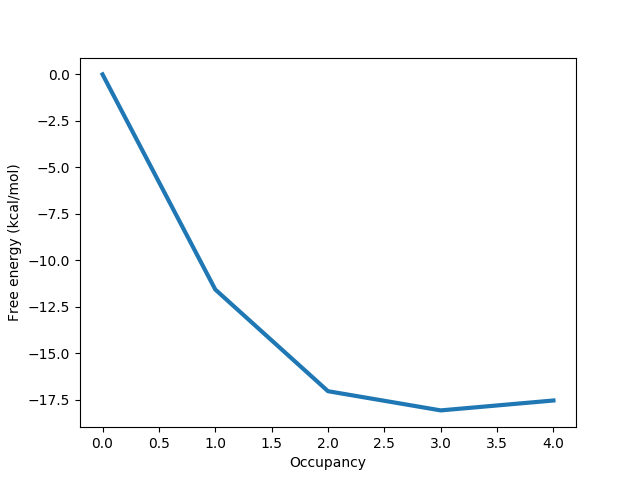

To come back to the tutorial index, click here.
protein_pms.pdb - the structure of the BPTI in PDB formatThe protein has already been protonated and the atoms names have translated to the ProtoMS naming scheme. You can read more about setting up structures here.
In protein_pms.pdb, a box centred at (32.0, 7.0, 2.0) whose sides have lengths (3.5, 4.0, 8.0) encompasses a small cavity. The aim is to use GCMC to calculate the total affinity of water for that site. We can create a box to these specifications by typing
python $PROTOMSHOME/tools/make_gcmcbox.py -b 32.0 7.0 2.0 3.5 4.0 8.0 -o gcmc_box.pdb
This creates a file called gcmc_box.pdb while outputting:
Volume of GCMC box: 112.0 Bequil: -9.15
We need to know the volume of the GCMC box later for analysis, but will use Bequil to set up the simulation. Bequil is calculated using:
Bequil = βμ'hyd + ln(V/Vo),
where Bequil is the Adams value that produces the equilibrium number of waters for the system. μ'hyd is the excess chemical potential of bulk water, which is the hydration free energy of a single water molecule. In ProtoMS, previous analysis has found that μ'hyd equals -6.2 kcal/mol. V here is the volume of the gcmc region and Vo is the volume occupied by a single water molecule at bulk density and has a value of 30 Å3. As the region specified by gcmc_box.pdb has a volume of 112 Å3, the above equation gives Bequil to be -9.15.
The box we've just created and the small cavity in the protein look like:
The figure shows a slice through the surface of the protein, and gcmc_box.pdb encompassing the small, sock-like cavity we're interested in.
As we wish to completely bind water to the volume specified by gcmc_box.pdb, we must run a series of GCMC simulations at different chemical potentials (Adams value in ProtoMS), within which the average number of inserted waters ranges from 0 to the equilibrium number of waters for the system. As we know Bequil is -9.15, we want to chose a range of waters which encompasses this value towards its higher end. We will chose a range of -6.8 to -29.8. As we would like this to run on a single, 16 processor node, we will run 16 B values between these two points. If you would like to set this simulation up for a different machine, change the value to 12 or 24, or any appropriate value.
python $PROTOMSHOME/protoms.py -s gcmc -sc protein_pms.pdb --gcmcbox gcmc_box.pdb --adamsrange -29.8 -6.8 16This has automatically solvated our protein in a droplet of water (
water.pdb) by randomly placing waters up to bulk density. Any solvent water that was placed inside gcmc_box.pdb has been removed to create water_clr.pdb.
For this system, convergence can sometimes be difficult. For this reason, open the run_gcmc. cmd file in a text editor. The last line should start with "chunk simulate 40000000". Change this to say "chunk simulate 80000000", which will double the number of production steps. Sa ve the changes before starting the simulation.
mpirun -np 16 $PROTOMSHOME/protoms3 run_gcmc.cmd
pymol out_gcmc/b_-8.333/all.pdbCheck your
warning files as well to make sure nothing untoward has happened.
Before calculating occupancies and free energies with grand canonical integration, we should check to see if the simulations are approximately equilibrated. For one simulation, we can see the average number of inserted GCMC waters for each snapshot by typing
python $PROTOMSHOME/tools/calc_series.py -f out_gcmc/b_-8.333/results -s solventson

For the rest of this analysis, we'll focus on the script calc_gci.py which contains a lot of functionality. With this script, we can see both how the number of waters changes with the chemical potential, and how the binding free energy of the network changes with the number of water molecules. We run this script with:
python $PROTOMSHOME/tools/calc_gci.py -d out_gcmc -v 112.0where the
-v flag is used to specify the volume of the GCMC region, which is required for the free energy calculation. Further, depending on the observation made with calc_series.py, a portion of the simulation can be discarded as equilibration with the -l flag. One of the plots will look like the following:
This titration plot shows how the average number of water molecules observed varies with the Adams value of each replica.
You will likely notice that the increases in the number of water molecules occur in 'steps', which is characteristic of GCMC titrations.
The area under this curve can be used to calculate the binding free energy of the water network, as described by Ross et al., JCTC, 2017.
An important point is that these free energies calculate will include any cooperative interactions between the water molecules in the network.
If the curve automatically fitted to the plot does not appear suitable, the complexity of the function used can be controlled manually with the -n flag, supplying to this the number of 'steps' that you observe in the plot.
The free energy data calculate will be printed to the screen and will look something like:
All free energy quantities are given in kcal/mol Number of Waters Insertion Free Energy Network Binding Free Energy Water Binding Free Energy 0 0.000 +- 0.000 0.000 +- 0.000 0.000 +- 0.000 1 -17.775 +- 0.000 -11.575 +- 0.000 -11.575 +- 0.000 2 -29.450 +- 0.000 -17.050 +- 0.000 -5.475 +- 0.000 3 -36.677 +- 0.000 -18.077 +- 0.000 -1.027 +- 0.000 4 -42.349 +- 0.000 -17.549 +- 0.000 0.528 +- 0.000
The first column lists the different numbers of water molecules sampled in the simulation and shows how the various thermodynamic parameters changes as the number of water molecules increases. The second column contains the insertion free energy of a given number of water molecules, which corresponds to the transfer of the waters from an ideal gas to the GCMC region. The third column shows the binding free energy of the network, which is the insertion free energy, with the free energy penalty associated with removing the water molecules from bulk solvent accounted for (thus corresponding to a more physical measure). Finally, the fourth column shows how the network free energy is affected by the addition of each water molecule. It should be noted that the results quoted above have no errors associated as the simulations were not repeated here (in practice, they should be).
As can be seen in the table above, the first three water molecules stabilise the network (as the binding free energy decreases). Interestingly, the fourth destabilises the network, with a binding free energy of +0.528 kcal/mol in this example, and therefore does not likely bind. This analysis is reflected in the rest of the output to the screen:
The equilibrium B value is -9.147 Most similar simulated B value is -9.867 Occupancy at -9.867 is 2.6487 +/- 0.0000 Occupancy at binding PMF minimum is 3.000
This shows that the most stable number of water molecules is 3, and compares this to the number of water molecules observed at the B value closest to equilibrium.
The information discussed above is also displayed in a graph like the one below:

Here it is clear that the free energy minimum corresponds to 3 water molecules, and we can more easily see the slightly destabilising effect of the fourth water molecule.
As already discussed, there are many options that can be passed to calc_gci.py, allowing a significant amount of control over the analysis performed.
Some of these are briefly discussed in this section.
If multiple repeats of a simulation have been carried out (this is highly recommended), these can be analysed together using a wildcard:
python $PROTOMSHOME/tools/calc_gci.py -d out_gcmc* -c 112.0
This will result in better free energy results, with more reliable statistics. Additionally, the titration plot will show the data points from each of the repeats in a different colour, in order to identify if there are consistency issues between repeats of the same simulation.
If you are only interested in a small portion of the titration curve, you can analyse only the free energy change over a given range. For example, to analyse the region between 2 and 3 water molecules, type the following
python $PROTOMSHOME/tools/calc_gci.py -d out_gcmc -v 112.0 --nmin 2 --nmax 3 -n 1
A similar analysis to that discussed previously will be printed to the screen, focusing only on the specified region.
The full list of options available with the calc_gci.py script can be found using the -h flag.